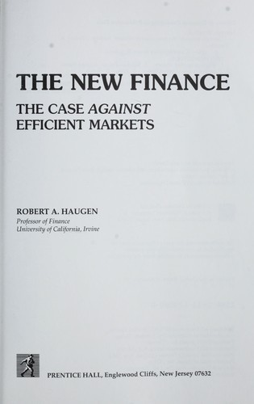

罗伯特·豪根（Robert A. Haugen, 1942—2013）是金融学界最具争议性的学者之一，先后在威斯康星大学、伊利诺伊大学和加州大学尔湾分校担任金融学教授。早在1960年代末至1970年代初，他与A·詹姆斯·海因斯（A. James Heins）共同发现了一个违反传统金融理论的现象：低风险股票的实际回报反而高于高风险股票。这一发现日后被称为"低波动率异象"（Low Volatility Anomaly），豪根因此被视为低波动率投资策略的先驱。《新金融学：有效市场的反例》首版出版于1995年，由普伦蒂斯-霍尔出版，此后多次修订再版，中文版《新金融学：有效市场的反例》由清华大学出版社2002年出版，赵冬青翻译。
本书是对有效市场假说（EMH）最系统的实证挑战之一。豪根的核心论点包括：第一，市场参与者持续对成功和失败的记录做出过度反应——短期内存在惯性（动量效应），长期则表现为过度反应导致的均值回归。第二，昂贵的"成长股"通常拥有快速的历史盈利增长，但并不拥有快速的未来盈利增长——成长股被系统性地高估，价值股被系统性地低估，这为价值投资提供了坚实的实证基础。第三，与资本资产定价模型（CAPM）的预测相反，最高风险的股票反而拥有最低的预期回报，最低风险的股票反而拥有最高的预期回报——这颠覆了现代金融理论的一个基本假设。豪根将有效市场范式定位为所有可能市场状态的一个极端，认为真实市场远未达到这一理想状态，传统金融学将被一种承认市场无效、过度反应和复杂性的"新金融学"所取代。
乔尔·格林布拉特（Joel Greenblatt）在哥伦比亚商学院教授"价值与特殊情况投资"课程时，将本书列为必读书目。威廉·伯恩斯坦在"高效前沿"推荐书单中指出，此书探讨了"为什么价值投资尽管面对市场有效性理论的挑战仍然持续有效"。豪根的文风以清晰直率著称，他善于用简洁有力的语言将复杂的学术发现转化为投资者可以理解的论证，这使得本书对专业人士和认真的业余投资者都具有吸引力。
《新金融学》的价值在于它动摇了投资世界中一个根深蒂固的信条——市场总是对的。对于习惯了教科书式金融理论的读者，这本书提供了一个重要的对立视角：市场价格可能系统性地偏离内在价值，而理解这种偏离的规律，正是获取超额回报的起点。